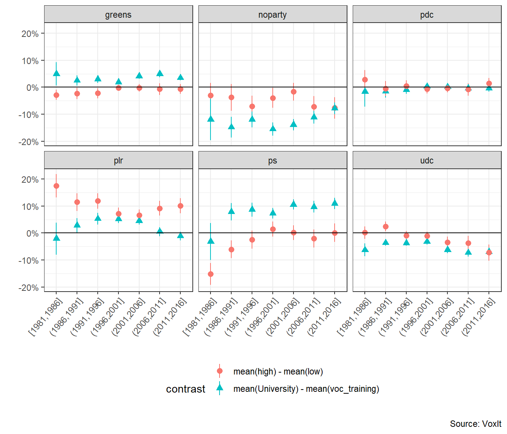
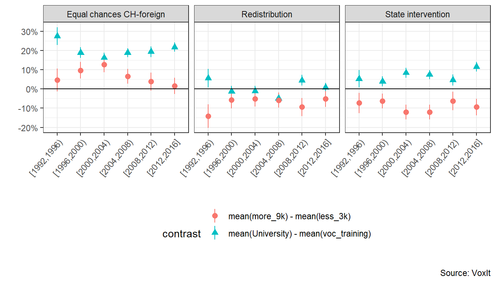

2.1 The traditional Swiss bourgeois and left blocs: historical perspectives
A striking feature of the history of Switzerland’s social blocs is the persistence and resilience of a liberal-conservative bloc since the creation of modern Switzerland in 1848, a bloc that the existing literature on the topic calls the bourgeois bloc. Tracing the history of Switzerland’s social blocs is therefore essentially a matter of tracing that of the bourgeois bloc. However, we shall see that tracing this history calls into question the extent to which, from a neorealist perspective, this bourgeois bloc can truly be described as bourgeois.
The history of the Swiss bourgeois bloc goes back to the creation of modern Switzerland. The religious cleavage between Radicals-Protestants modernizers and Catholic federalists, which was historically one of the most structuring conflicts in Switzerland, led to the Sonderbund civil war (1847) and the foundation of modern Switzerland in 1848. The federal institutions elaborated during and in the decades following the first Swiss constitution of 1848 can be interpreted as a social compromise between the losers of the Sonderbund civil war, the Catholic-Conservative coalition opposed to the centralization and modernization of the Swiss Confederation, and the victorious Radicals who were on average Protestants and bourgeois from urban areas (Sciarini 2023). However, these two blocs were highly heterogeneous and subject to internal contradictions.
From the outset of their movement, the Radicals were gathered by an unitary illusion: the pretention to transcend cleavages running through Swiss society and unite all its elements thanks to an encompassing goal: the modernization and centralization of the Swiss state. Far from homogeneous, the Radical bloc was a kaleidoscopic mass-movement constituted by the working class through the Grütli Union1 and by an elite gathering entrepreneurs, bankers, journalists, lawyers and teachers, who were nonetheless divided over the role of the Swiss state.
The political and economic thought of the Radical movement can be difficult to grasp, as its members could substantially differ from one canton to another. Overall, this movement showed a clear intellectual affiliation to the liberal economic and political thoought of the 18th and 19th centuries. James Fazy, one of Geneva’s leading 19th-century Radical politicians, was strongly influenced by the Physiocrates and Adam Smith. In 1821, the Genevan Radical published L’homme aux portions, an essay denouncing the French economic system as too rigid and containing too many barriers to free trade. This book was praised by Jean-Baptiste Say, who considered Fazy to be an intellectual who fully belonged to the liberal school of thought of his time (Mettral Dubois 2015, 55–56).
Parts of the Radicals, constituted by the Democrats, were partisans of a more centralized and interventionist state while another important branch, the liberal or “manchesterian” Radicals, were more federalist and in favor of laissez-faire. This divide between Democrats and Liberals was made explicit as early as 1852 over the issue of the nationalization of the Swiss railway industry. Supporters of a state-run railroad network, represented by for instance in Bern by Jakob Stämplfi and Johann Jakob Speiser, were opposed by liberal Radicals such as Alfred Escher in Zurich, who were industrialists and bankers close to the private railway companies, when they weren’t the owners themselves (Meuwly 2010).
Regarding the Catholic-Conservative bloc, the latter was from the start a cross-class coalition, constituted by, of course, the Catholic elite, but also by peasants, farmers, artisans and the commercial middle class from rural areas. These groups were united by Catholicism, but also by anti-modernism and federalism. This conservative coalition was the first to make extensive use of the constitutional and optional referendum (respectively 1848 and 1874) to block the modernization promulgated by the Radicals. While the Radicals were convinced that the idea of the Swiss nation would transcend divisions and social conflict, the Catholic-Conservative believed that religion, rather than the Swiss state, would endorse this role (Altermatt 1979).
As industrialization, proletarianization and unionization intensified in the late 19th, the hegemony of the Radical mosaic gradually shattered as the contradictions between the policy expectation of the popular and bourgeois bases increased. Parts of the democrats and of the working class joined or even founded socialist organizations. When the Swiss Socialist party was founded in 1888, it was a former Radical, Albert Steck, who wrote the party’s first program, which provided for nationalizations and a transition to a planned and managed economy.
The creation of the Swiss Socialist Party prompted the Radicals to set up their own party, which was created in 1894 under the name of the Radical-Democratic party (PRD). This marked the beginning of the Radical shift towards liberal stances, which became clear-cut after the general strike of 1912, after which “a long-denied class conflict became evident” (Meuwly 2010, 49). Conversely, industrialization and class conflict represented an opportunity for an extension of the social basis of the Catholic-Conservative bloc towards the working class. The global development of a Catholic social doctrine, beginning with the encyclical Rerum Novarum (1881), was integrated by the Swiss Catholic-Conservatives, who then tried to attract parts of the working class (Altermatt 1979).
This polarization of class conflict around a left and right bloc became even more salient after the second general strike of 1918, which was the biggest strike and social protest in Swiss history. The latter was followed by the introduction of the proportional representation system: the Radicals lost their hegemony in the parliament and the Catholic-Conservatives, who meanwhile became the Christian-Democrats, and the Socialists became important political actors in the National Council. The Socialist Party (PS) consolidated a left bloc while the Radical-Democrats (PRD), the Christian-Democrats (PDC) and the Agrarians formed an alliance against the left. This coalition between the PRD, PDC and Agrarians and its close links with business association such as the Vorort (1870) led many observers to name this dominant coalition the “bourgeois bloc” (Mach 2007).
However, the extent to which this dominant bloc can truly be described as bourgeois must be questioned, in addition to the fact that there is no precise definition given in the literature. In the sense given by the latter (Mach 2007; Meuwly 2008), the bourgeois bloc refers to a political coalition between the Radical-Democrats, the Christian-Democrats and the Agrarians (now UDC) and its close ties with business interest associations. This bloc is hence bourgeois only because it gathers right-wing parties and business interest associations, a definition which is rather narrow and can be misleading since it does not take into account the social basis of the bloc. Calling the right-wing coalition bourgeois ignores, for instance, the fact that this bloc gathered some popular socio-economic groups such as small-business owners and peasants. In the sense given by Amable and Palombarini (Amable and Palombarini 2018), the bloc bourgeois observed in France corresponds to the aggregation of the wealthiest and most educated groups of the traditional left and right blocs. I argue that, from a neorealist perspective, the Radical bloc of the 19th century and the right-wing coalition of the 20th cannot be described as bourgeois and that other terms such as “liberal-conservative” or simply “right-wing” bloc are more suited.
In fact, until the post-war period, the evolution of the Swiss social blocs can thus be resumed as follows. From the middle to the late 19th century, the Radicals formed a strongly heterogeneous but dominant social bloc. This dominant social bloc was composed by the working class (mainly through the Grütli Union), and an urban elite composed by the most educated (journalists, lawyers, teachers) and the wealthy industrial bourgeoisie (entrepreneurs, bankers…). This DSB was united by their willingness to modernize the Confederation against the Catholic-Conservatives. A second period, from the late 19th to the second World War, marked the recomposition of the DSB and its transformation into a liberal-conservative political bloc. Part of the working class and of the democrats (educated elite) joined the emerging socialist-left bloc while the Christian-Democrats attracted part of the working class while being progressively incorporated into the DSB, along with the Agrarian party which represented the peasant and farmer classes.
Analyses of the first Swiss post-electoral surveys which were conducted in the 1970s show the heterogeneity of the Swiss “bourgeois bloc” and that the term bourgeois is not valid for the right bloc as a whole. The social basis of the Liberal-Radical party was constituted by large employers/liberal professions and managers. The UDC relied heavily on small business owners’ support while the PDC’s social basis was rather cross-class (Rennwald 2014; Tawfik 2019). Therefore, of the three right-wing government parties, only the Liberal-Radical party’s social basis can truly be described as bourgeois. Regarding the support for the Socialist party, the latter was neither a bourgeois nor solely a popular party, but a hybrid-class party whose social basis was constituted by socio-cultural professionals and production workers (Rennwald 2020).
The coalition between the Radical-Democrats, Christian-Democrats and Agrarians against the left bloc took deeply roots into the Swiss socio-political system: it persisted during the post-war period and still shapes Swiss politics to some extent nowadays (Mazzoleni and Meuwly 2013; Meuwly 2010, 2008). A striking feature of the Swiss DSB is its persistence and resilience since 1848: even though this bloc underwent important transformations, especially after the introduction of the proportional system in 1918, it was always mediated by right-wing parties, first the Radicals and then an extended coalition with the Catholic-Conservative and the Agrarians. Despite its incorporation in the parliament and government, the left bloc never truly became dominant in Switzerland.
To sum up, Switzerland’s traditional social blocs crystallized into an opposition between two blocs, which is summarized in Table 2.1. On the one hand, the dominant social bloc, which can be called liberal-conservative, gathered the large employers and owners of the big industrialized and internationalized firms, medium and small business owners and farmers, and skilled workers from the private sector. At the political level, this socio-political group was represented by business interest associations such as the Vorort (now EconomieSuisse), and the Radical-Democratic party.
The program of the Radical-Democratic and policy demands from the business interests associations linked to the large industrialized firms and large employees were to maintain low social protection, low taxation, no barriers to external trade and to promote free trade at the international level.
Alongside this group were the medium and small business owners producing essentially for the national market, and skilled workers (managers) from the private sector. The policy demands from the medium and small firms differed substantially from those of the large companies in terms of the degree of protection from international competition and public subsidies. Unlike the big corporations, small firms felt more threatened by external competition, and, since they produced mainly for the internal and rather small Swiss market, they tended to ask for protection and public subsidies.
On the other hand, the main social bloc excluded from the DSB was the left bloc, constituted by socio-cultural professionals, workers from the public sector, and production workers from the private sector. These groups were mediated by the Swiss Socialist party, which was incorporated into the government during the Post-war period, but never really managed to dominate the parliament and government.
In its early days, the Swiss Socialist party had strong communist stances. Its first program (1888) had strong marxist and anti-capitalist positions: it advocated nationalization, collectivization, economic planning as ways out of capitalism. In the post-war period, the party moderated its program and became more a social-democratic reformist party. The main policy demands of the revised program of 1959 were focused on social reforms and expansionary policies within the capitalist framework: extending social protection; promote economic growth and anti-cyclical Keynesian macroeconomic policies and ensure full employment (Degen 2022).
2.2 Swiss social blocs and socio-economic factors: 1980-2016
How have the social bases of the liberal-conservative and left blocs evolved since the 70s? How are the support for the main Swiss social blocs influenced by socio-economic characteristics? The objective of this section is to explore the composition of the Swiss social blocs in terms of socio-economic characteristics and assess their evolution since the post-war period.
A recent trend in political economy developed a tremendous analysis of the long run transformations of political cleavages, social blocs, and voting outcomes in almost all democratic countries around the world. The popularity of inequality studies, after the contributions of renown economists such as Atkinson (2015), Milanovic (2016) and of course Piketty (Piketty 2014), economists recently became interested in the problematic of social conflict and political cleavages. One possible explanation of this sudden interest is the inequality paradox: increasing inequality and neoliberal reforms did not pave the way for growing support for redistribution, taxation of top income and wealth owners, or for left parties. The same paradox could be applied to a “climate change paradox”, that is, the fact that the growing emergency or environmental issues were not followed by increasing support for green parties. For instance, the Swiss federal election of 2023 marked the end of the “green wave” and a sharp decline green parties2.
Those paradox thus gave way to a recent literature linking political cleavages and voting outcomes as function of a set of socio-economic factors, mainly income and education level. Trying to explore this inequality paradox, Piketty (2018) underlines the fact that, rather than bringing back class-based divide back to its post-war salience, the global rise in inequality since the 1970s was followed by the emergence of a new cleavage and a multi-elite party system. During the post-war period, the electoral support for the left parties in The US, UK and France was mainly constituted by popular classes with low income and education levels whereas right-wing parties were supported by high income and education voters. The popular element of the support for the left blocs then transformed in the 1970-80s: left parties became the bloc of the highly educated, thus becoming the brahmin left, whereas the right kept the support of the wealthy (merchant right) (Piketty 2018, 2019). A further project, which gave birth to the World Political Cleavage and Inequality Database (WPID), showed that these transformations affected almost all Western democracies (Armory Gethin, Martinez-Toledano, and Piketty 2021).
Underlying the rise of a new cleavage in the 70s and 80s, Piketty and the WPID tackle a topic which is well-known in political science: the emergence of a cleavage centered around cultural values, that Piketty calls the “nativists-internationalists” divide, which cuts across the traditional class conflict and is the result of the increase in average education level and of globalization. This “cultural cleavage” has been given as many labels as it has analysts among political scientists: “materialist-postmaterialist” divide for Inglehart (1971, 1990; 1987); the “libertarian-authoritarian” cleavage (Kitschelt 1994; Flanagan and Lee 2003); winners vs losers of globalization (Hanspeter Kriesi et al. 2006; H. Kriesi et al. 2008; Teney, Lacewell, and Wilde 2014); the “transnational cleavage” (Hooghe and Marks 2018) or the “universalism-particularism” cleavage (Bornschier 2010; Zollinger 2022).
The combination of this new cultural cleavage with the traditional class-based conflict draws a bi-dimensional political space in which four social blocs are possible: the brahmin left, also called the internationalist-egalitarian bloc which is on the left both culturally and economically; an internationalist-inegalitarian bloc (merchant right) on the left culturally but economically on the right; a nativist-inegalitarian bloc on the right culturally and economically; and a nativist-egalitarian bloc which is culturally conservative but economically on the left (Piketty 2018, 2019).
Testing the relevance of the brahmin left vs merchant right divide, Amable and Darcillon (2022b) offer different perspectives over the possible coalitions resulting from this bi-dimensional political divide. On the one hand, preference for redistribution decreases with both education and income levels. On the other hand, support for globalization issues (such as immigration) is not only positively influenced by education level, but also positively associated with income. Amable and Darcillon (2022b) suggest the possibility of a rapprochement between the brahmin left and the merchant right over policy preferences, giving birth to a bourgeois bloc uniting the wealthiest and most educated groups from the left and the right. Amable and Darcillon (2022a) show that the brahmin left vs merchant right divide has not taken place in every country and that the classical popular left versus bourgeois right opposition is still relevant for many countries.
In this context of multi-elite party system and multidimensional political divides, Switzerland is an interesting case study. A widespread idea claims that the class-based cleavage always played a relatively minor role in Switzerland. In Switzerland, class conflict was always cut across a wide variety of other divides: religious, linguistic or regional. Moreover, due to strong standard-of-living increase throughout the 20th century, Switzerland is also often considered as a forerunner in the emergence of this “cultural” cleavage, and in the precociousness and strength of the educational shift.
As a team part of the WPID project puts it, Switzerland is the country where “the shift of the higher educated towards the left has been the most dramatic” (Durrer de la Sota, Gethin, and Martinez-Toledano 2021, 4). During the post-war period until the 1990s, the left bloc (mainly the PS) was supported by low income and education voters while right-wing parties showed different patterns of class support, which call into question the extent to which this bourgeois bloc can truly be characterized as “bourgeois”. Of the three parties constituting the bourgeois bloc, only one of them, the PRD-PLR party, had clearly a bourgeois composition since it is consistently supported by the most wealthy and educated groups since the post-war period. The PDC and the UDC cannot really be described as “bourgeois” since, according to Durrer de la Sota, Gethin, and Martinez-Toledano (2021), the support for the two parties was negatively associated with income and education. While this negative association tends to decline for the PDC, it became even more strong for the UDC since the 90s. After this period, the left bloc became “brahmin” in the sense that it gathered strong support among the most educated classes, while its popular support moved either into abstention or to the UDC.
This article by Durrer de la Sota, Gethin, and Martinez-Toledano (2021), shows that Piketty’s brahmin left vs merchant right divide is partially valid in Switzerland: a Swiss brahmin left indeed exists through the Swiss Socialist Party. However this bloc do not face a merchant right, but rather a bourgeois bloc gathered by the Radical-Liberals and a popular bloc which support the UDC or do not support any party. Rather than being constituted by a brahmin left, a merchant right and a nativist bloc, Switzerland’s tripolar political space is rather divided between a bourgeois bloc, a brahmin left and a popular bloc.
The transformation of party systems into a mutli-elite and tripolar political space came with important change in the structural basis of party support. Oesch and Rennwald (2010) show that, in Switzerland, the cultural cleavage is rooted in the class structure, and caused a re-alignment between class and party support. Before this shift took place, the traditional left bloc politically represented by the Socialist Party was a hybrid-class coalition gathering socio-cultural professionals (teachers, academics, journalists…) and production workers, but also from technicians, clerks and service workers (Rennwald 2020).
This strong class heterogeneity of the Swiss left declined: an analysis of Swiss post-election surveys for 2003 and 2007 show that the Swiss left was deserted by production workers who directed their support for the Swiss People’s party due to cultural issues (Oesch and Rennwald 2010). Using European Social Survey data for 2011 and 2015, Rennwald (2020) show that socio-cultural professionals remain the only “party preserve” of the Swiss left.
Oesch and Rennwald (2018) show that the rise of the radical-right and of the cultural cleavage transformed the patterns of class voting. The working class, or at least some of its constituencies such as production workers, are still attracted to the left due to their economic interests, but also by the far-right because of cultural issues, leaving socio-cultural professionals as the sole “stronghold” of the left. Small artisans and business owners are also divided between their support to the center-right and the far-right: their economic preferences make them closer to the center-right while their cultural preferences are closer to the far-right.
The empirical agenda of the present study is to test the validity and relevance of the literature reviewed above. More specifically, how are socio-economic factor shaping the composition of each Swiss social blocs? The objective of the empirical analysis conducted here is to test the following hypotheses regarding party support (PS), political leaning (PL), and issue positions (IP), derived from the contributions of the WPID project (Piketty 2018, 2019; Durrer de la Sota, Gethin, and Martinez-Toledano 2021; Armory Gethin, Martinez-Toledano, and Piketty 2021; Amory Gethin, Martínez-Toledano, and Piketty 2022); Oesch and Rennwald (2018); and Amable and Darcillon (2022b, 2022a):
Brahmin left versus merchant right hypotheses
- BvsM1. The support for the left and left-wing parties should be negatively associated with education and income levels in the first time periods. The negative association with education should then decrease and become positive over time.
- BvsM2. The support for the right and right-wing parties should be positively associated with education and income in the first time periods and the positive association with education should decrease over time.
Bourgeois bloc hypotheses
- BB1. The support for redistribution and state intervention should decrease with education and income. Support for equal rights between Swiss citizen and foreigners should increase with education and income.
- BB2. Support for right-wing parties and the right should increase with both income and education levels.
2.2.1 Data and empirical strategy
To test the hypotheses above, two types of data sources are especially relevant. The Swiss Election Studies (SELECTS) cumulative dataset is a harmonized dataset merging every Swiss post-election (federal assembly elections, which take place every four years) surveys from 1971 to 2019 (Tresch and Lutz 2022). Since SELECTS data are already drastically analyzed by the literature (for instance by Durrer de la Sota, Gethin, and Martinez-Toledano (2021)), I contribute to the existing research by analyzing another data source, the VoxIt cumulative dataset which harmonize every post-vote surveys from 1981 to 2016 (Brunner, Kriesi, and Lorétan 2017).
In each poll, respondents were asked which party they supported and their self-placement on the left-right axis on a Likert 10 points scale. The main dependent variables are dummy variables for party identification and political leaning computed from these two variables. Three other variables regarding issue position on public policies such as redistribution, state intervention and equal rights between Swiss citizen and foreigners are also considered.
The main independent variables are education and income levels. The variable “educ” is a qualitative variables on the highest achieved educational level with 6 categories ranging from primary school to university. It is important here to underline the peculiarities of the Swiss education system. Switzerland’s education system is strongly based on vocational training. As a result, other education categories tend to be missing for a lot of year-periods of the dataset. To solve this problem, but also to simplify the data structure, years are aggregated into several time periods to avoid separation issues.
Figure 2.1 shows the proportions of each level of education and their evolution over time. In the 1980s, most of the Swiss completed either vocational training or compulsory school. The share of compulsory schooling declined over time, reflecting the overall increase in average education, as seen also by the increase in the share of university graduates. The share of vocational training declined over time, but is still the most widespread education level in Switzerland. For the regression analysis, the categories “university” and “higher specialized school” are merged together since the absence of the latter in the first two time periods could cause estimation issues. This does not pose a major issue since higher specialized schooling is rather similar to university in Switzerland.
Regarding income levels, the dataset contains two variables. The variable “nivmena” represents the houshold’s standard of living in four categories (high, middle-high, middle-low, low) available from 1981 to 1991 whereas “revenu” is an income bracket variable in five categories available from 1992 to 2016. To harmonize these two variables in order to construct one single income or standard of living variable, I recode the variable “revenu” in order to make it similar to “nivmena” by grouping the income brackets categories 3 (from 5’001 chf to 7’000 chf) and 4 (from 7’001 to 9’000) into the “middle-high” category. This harmonized variable is used only in regressions for party support because political leaning and issue position variables are not available until 1992 (thus for these dependent variables the variable “revenu” is used as an independent variable for income).

A series of binary logit regressions for party support, political leaning, opinion on redistribution, state intervention and equal rights between Swiss and foreigners are conducted. The results presented in this section come from the following model:
\[ Y_{it} = \alpha + \beta_{I}I_{it} + \beta_{E}E_{it} + \beta I_{it}E_{it} + \gamma X_{it} + \eta_{1} Year + \eta_{2}YearI_{it}+ \eta_{3}YearE_{it} + \epsilon_{it} \tag{2.1}\]
With \(I_{it}\) and \(E_{it}\) the income and education level of individual \(i\) in period \(t\) and \(X\) a vector of socio-demographic characteristics control variables which were available in the dataset for all time periods. The controls are for age (grouped into 4 categories), gender, religion, linguistic region (French, German or Italian), marital status and house ownership. \(Year\) are dummy variables for the time periods and \(\epsilon_{it}\) is the error term. The models include interaction terms between education and income as well as between income, education and time period in order to assess the temporal evolution of the correlation between the dependent and main explanatory variables. Income and Education are treated as categorical variables, with vocational training and low income as reference categories. The results are presented in the form of average marginal contrasts which allow to compare the difference in average predicted probabilities between groups of interests, in our case, between highest and lowest income groups and between university graduates and vocational training graduates.

Figure 2.3 show average marginal contrasts for each party or no party support in each time periods. The results partially confirm those of Durrer de la Sota, Gethin, and Martinez-Toledano (2021) and hypotheses BvsM1 and BvsM2. First, the Swiss Socialist party (PS) used to be supported by relatively low education and income groups in the 1980s and became indeed a brahmin left party over time: the difference between the highly educated and vocational training graduates became positive in the second half of the 1980s and continued to increase in almost all time periods while the negative difference between the highest and lowest income groups decreased, indicating that the party’s social basis became more educated and wealthier over time. However, the results show that the educational shift took place already in the 80s: university graduates already supported more the PS compared to vocational training graduates. This is an important result because it indicates that the PS became the party of the most educated in the 80s, before the economic and political crisis of the 90s and, most importantly, before the vote on the adhesion to the European Economic Area (EEA) in 1992, events which are often associated with the final stage of the educational shift and the PS’s loss of popular support.
Second, the Liberal-Radical party (Radical-Democratic and Swiss Liberal Party before the latter merged in 2008) (PLR) shows a clear bourgeois basis for almost all time periods. The PLR is thus indeed the party of the wealthiest and most educated groups and is the only party that shows this pattern. However, the PLR seems to gradually become a merchant right party in the last time periods. In Durrer de la Sota, Gethin, and Martinez-Toledano (2021), another party, the Greens, also became bourgeois between 2011-2019, with the difference between the top 10% income and bottom 90% income voting Green becoming positive during this period while the difference between the top 10% and bottom 90% educated was positive since the 80s. The results shown in Figure 2.3 rather indicate that the Greens was a brahmin left party from 1981 to 2016.
Third, the results show that the Swiss People’s Part (UDC) was a merchant right party whose social basis became popular both in terms of education and income levels. Before the 90s the party gathered the less educated, but also the wealthiest income groups (hence “merchant” in Piketty’s terms). Here the results contrasts with those of Durrer de la Sota, Gethin, and Martinez-Toledano (2021) which show that the UDC was already a popular party gathering the less educated and poorest income groups in the 70s. Finally, we can see that popular groups, both in terms of education and income levels, are likely to not support any party relatively to the wealthy and most educated.
Figure 2.4 show average marginal contrasts for left leaning, right leaning and no leaning. Interestingly, we can see that right leaning used to be bourgeois in the 80s and 90s while left leaning used to be brahmin. Over time, left leaning became bourgeois and right leaning became merchant. In the 80s and 90s, left leaning was positively associated with education, but not with income level while right leaning was positively associated with both. The positive difference between university and vocational training graduates declined for right leaning whereas it stayed rather stable for left leaning, indicating that the most educated support the left for all time periods while their support for the right declined over time. Popular groups tend to not identify with either the left or the right.

Finally, Figure 2.5 show average marginal contrasts for issue positions regarding equal rights between foreigner and Swiss citizen, redistribution and state intervention. The support for equal rights is positively associated with both education and income levels. However, the positive difference between highest and lowest income groups tend to decrease since the 2000s, indicating a decline of the “progressive attitude” of the wealthiest income groups towards foreigners. The difference between income groups in the support for redistribution is negative for all time periods whereas the difference between education groups was declining from 1992 to 2008, but tend to increase since in 2008-2012, but is not significant in 2012-2016. Regarding support for state intervention, the difference between education groups and income groups are respectively positive and negative: university graduates tend to be relatively more in favor of state intervention and the highest income groups tend to be relatively against for all time periods, indicating a brahmin left vs merchant right divide over state intervention.
To sum up, the results overall confirm the brahmin left vs merchant right hypotheses, even more than the results of the WPID project. The support for the Swiss Socialist party evolved from a traditional popular support towards a brahmin left support in the 80s. The results confirm the bourgeois composition of the PLR, since the latter seems to be gradually transforming into a merchant right composition since the beginning of the 2010s. The greens belong to the brahmin left since the 80s and there is no clear trend that the party evolved into a bourgeois party. Regarding the UDC, the latter used to be a merchant right party in the 80s, and evolved into a populist or, in Piketty’s terms, a nativist party in the 90s. Thus, unlike Durrer de la Sota, Gethin, and Martinez-Toledano (2021) and the classification presented in Table 2.1, the social basis of the PLR seems to be transforming into a merchant right, while the Greens have kept their brahmin elements.
However, if one looks at political leaning on a left-right axis instead of party support, self-identification to the right used to be rather bourgeois in the 90s, and then went merchant afterwards. Self-identification to the left used to be brahmin in the 90s and even became bourgeois in recent time periods, if one looks at the difference in predicted probabilities between the upper-middle income and lowest income groups.
Finally, regarding policy preferences, preferences for equal opportunities and rights between foreigners and Swiss citizen for the highest incomes and the most educated seemed to converge until the mid-2000s, and have been diverging ever since. The divide over state intervention shows a brahmin vs merchant opposition in all time periods, with the highest income group being in favor of free market (relatively to the lowest income group) and university graduates being relatively more in favor of state intervention (relatively to vocational training graduates). The divide over income redistribution is less clear-cut than the state vs market divide: the cleavage appears to be brahmin vs merchant for some time periods (mostly 1992-1996 and 2008-20012), solely negatively correlated with income (1996-2004) or show a bourgeois vs anti-bourgeois opposition (2004-2008), with both the most education and wealthy being relatively opposed to redistribution.
Overall, the regression analysis conducted in this section, using a different data source from the WPID project offers a new way to describe the evolution of the Swiss version of the brahmin left vs merchant right divide, which is summarized in Table 2.3. However, this analysis suffers from several limitations.
On the one hand, one possible methodological issue of VoxIt dataset is the clustering structure of the data. Swiss citizen are clustered into several geographical levels, the most important ones being the cantonal and communal (district) levels. Switzerland is a highly decentralized and federalist country: every day political life as well as economic and political institutions can be substantially different across cantons. Every canton has its own party system and some Swiss parties, such as the Lega Ticinessi or Mouvement Citoyen Genevois (Geneva Citizen Movement) exist only at the cantonal level. A possible methodological solution, which would take into account both the time periods and the cantons as levels in which data are clustered, was considered by the author: a series of multilevel logit regressions. However, the results from these multilevel regressions showed that the variations between canton were negligible and thus a more simple model, the one presented in this section, was chosen. Moreover, the results between the multilevel model and the model of this section give overall similar results.
On the other hand, the perspective adopted in this section is essentially a top-down approach, in which social blocs are derived from the relationships between party support, political leaning or policy preferences taken as dependent variables to be explained by a set of socio-economic characteristics. This is the method which is the most widespread in the literature, but it suffers from having an oversimplified view of social conflict, which is almost always reduced to two dimensions (the so-called cultural and economic divides). One important contribution of the neorealist approach is to underline the fact that social conflict is multidimensional (Amable and Palombarini 2023) and that a bottom-up approach can be more suited to analyze the formation of social blocs. The next section will therefore adopt this bottom-up approach which is specific to the neorealist approach by conducting a latent class analysis for the late 90s.
2.3 In search of the liberal-conservative and left blocs
The objective of the present section is to assess empirically the reconfiguration of the Swiss social blocs during the 90s. More specifically, the objective is to analyze how the dominant Swiss social bloc was able to recompose during the crisis using a bottom-up approach different from the previous section, and more aligned with the neorealist approach. One of the main limitations of the regression analysis of the previous section was to consider social groups as pre-defined based on different income and educational levels, or occupation, and only two cleavage dimensions.
As explained in the introduction, the neorealist approach starts from the diversity of social expectations emanating from the heterogeneity of the social structure. Socio-political groups could be endogenously defined based on the proximity of Swiss citizen’s preferences regarding economic and public policies. A method that allow such procedure is latent class analysis (LCA). LCA is rarely used in the social sciences, but has recently been applied as part of the neorealist approach to infer socio-political groups based on a set of policy preferences variables from post-electoral surveys. It was first used by Amable, Guillaud, and Palombarini (2012) to identify socio-political groups in France and Italy. The analysis resulted in the identification of twelve groups for France, and seven for Italy. The analysis of France socio-political groups and social blocs was then improved in a subsequent paper by Amable (2021).
This section has for ambition to extend the contribution of Amable, Guillaud, and Palombarini (2012) and Amable (2021) to Switzerland by conducting LCA analysis using Swiss election studies data. The methodology and approach used here closely follow the approach taken in Amable (2021).
2.3.1 The latent class model and estimation method
LCA allows to find a categorical structure from a set of categorical variables. The idea is that the Swiss population can be divided into different subgroups (socio-political groups given our theoretical framework), but that the latter are unobserved and can be indirectly estimated through a set of questions regarding policy preferences. The method employed here takes the following form:
\[f(y_i) = \sum^K_{x = 1} P(x) \prod^T_{t=1} P(y_{it} | x) \tag{2.2}\]
With \(f(y_i)\) the probability density function corresponding to a particular response pattern \(y_i\). \(y_{it}\) is the response pattern of individual \(i\) to a set of \(T\) survey questions taken as indicators in the model. \(P(X)\) is the probability to belong to a certain cluster given by the latent discrete variable \(x\), which is between one and \(K\) clusters (\(1\le x \le K\)). The association between the latent class variable and the indicators \(T\) is estimated through binary logistic regressions (if the indicators are dichotomous) or, in our case, through multinomial logistic regressions (if the indicators have more than two un-ordered categories) (Vermunt and Magidson 2016).
An important step of LCA is model selection, that is, choosing the model with the appropriate number of clusters. The criteria chosen to determine the number of clusters in this section is a bootstrap likelihood ratio test, an indicator which, according to the simulation tests performed by Nylund, Asparouhov, and Muthén (2007), is the most suited compared to information criteria (AIC, BIC…). A series of models are thus estimated, increasing the number of clusters with each new model until the bootstrap likelihood ratio test showed no significance of adding a supplementary cluster to the model3.
2.3.2 Estimation of Swiss socio-political groups in 1999: the 12 clusters model
For the LCA estimation, the Swiss post-electoral study of 1999 (Hardmeier et al. 2022) is chosen. The reasons behind this choice are technical, but first and foremost historical since the 90s represent a turning point in Swiss history and the evolution of the Swiss social blocs.
As explained in section 2.1, the Swiss socio-political landscape was structured around two social blocs before the 90s: a dominant liberal-conservative and a subordinate left bloc. These two blocs were able to cooperate in what Pietro Boschetti famously called the Swiss variant of the “historical compromise” between the Swiss left and right-wing parties. On the one hand, the PRD, PDC and Agrarian parties were willing to cooperate with the Swiss Socialist party and develop social security to a certain extent. On the other hand, the Swiss Socialist party abandoned its anti-capitalist stances and became a moderate and social-democrat reformist party aimed at promoting the creation of a Swiss welfare state, increase in real wage and promote the public sector and employment protection (Boschetti 2007). However, this compromise should not be overestimated, as the liberal-conservative bloc remained largely dominant, this compromise corresponded more to a “asymmetrical class compromise” (Kergomard 2022, 3) between the two blocs.
Since the break-up of the post-war Keynesian “historical compromise” between the traditional Swiss left and right-wing parties during the so-called “decade of all dangers” of the 90s (Boschetti 2007), the liberal-conservative and left blocs are undergoing important transformations, that some authors interpreted as various forms of latent political crises. The Swiss political scene is still marked by the rise of the Swiss People Party (UDC), one of the most successful far-right populist parties in Europe, and the Greens. The electoral success of the UDC is often associated with the destabilization of the liberal-conservative bloc, which entered during the 90s into a phase of “cacophonic” crisis (Meuwly 2008) which still persists in the early 2020s.

In fact, all the Swiss traditional main government parties, the Swiss Socialist Party (PS) The Radical-Liberals (PRD-PLR) and the PDC, are in decline since the post-war period (see Figure 2.6). On the right, the crisis can be seen through the fall in vote shares (apart from the UDC); and the increase in party merges and re-configurations. In 2008, the Bourgeois Democratic Party (PBD) was created after a scission from the SVP. One year later, the Radicals, who created the Swiss modern state in 1848 and dominated Swiss politics until the first half of the 20th century, merged with the liberals to create the PLR. The PBD, whose creation disturbed the composition of a reputed unchangeable federal council, then merged with the PDC to create Le Centre (the Center) in 2021. The federal election of 2023 led to major historical change for the Swiss right. The PLR, very far from its former hegemonic domination of Swiss politics, is now in the fourth place in terms of low chamber parliamentary seats.
the crisis of the 90s marked an important turning point in the history and evolution of the Swiss social blocs described in Table 2.1. In fact, both the liberal-conservative and left blocs were based on internal compromises between their socio-political groups which shattered under the pressure of structural and external pressures.
The demands of the large export-oriented industries and sectors producing essentially for the internal market converged in terms of labor market flexibility, low employment protection and weak welfare state, but they differed in terms of commercial and industrial policies. In fact, the dualist structure of the Swiss economy, split between a protected sector producing for the domestic market and a competitive and export-led sector, implied some important contradictory policy demands within the bloc. This internal cleavage was reflected in the structure of the Swiss business interests associations, divided between those (like the Vorort) defending the large export-oriented industries and thus asked for liberal, free-trade commercial policies and those defending the farmers, medium and small firms, and small business owners producing for the internal Swiss market who asked for protection and subsidies. These contradictory demands were temporarily compatible during the post-war period and, as a result, reinforced the dual structure of the Swiss economy which combined a highly liberalized and free-trade exporting sector with a subsidized and highly protected internal sector (Mach and Eichenberger 2011).
However, as globalization, financialization and European integration intensified in the late 20th, the social groups attached to the interests of the internationalized Swiss industries gradually dissociated themselves from the groups attached to the internal sector. This dissociation was made explicit by the publication of a series of “white-books” by political and economic actors defending the interests of the Swiss multinational corporations. These white books advocated a dismantling of the Swiss Hybrid model by promoting a series of neoliberal reforms. The main policy demands of the white books were to increase competition in the international sector by dismantling Swiss cartels, reform the taxation system, reduce employment protection and social security, and privatize the public sector (Mach 2007).
Furthermore, the Swiss post-electoral study of 1999 (Hardmeier et al. 2022) has the advantage of having enough observation (3258 records) and containing issue position variables with good enough qualities to infer socio-political groups quiet fairly. The ideal data set would be the one containing issue position variables which cover a good range of institutional areas, such as the one considered in Amable (2003): products market, social protection, labour market, the financial system and the educational system along with general policy orientations (Amable 2021). Although the Swiss post-electoral study of 1999 is the most relevant for the present research, it is still limited by the questions available.
Nine questions were considered relevant to be taken as indicators. Of the nine questions, three concern economic policy. One question asked the respondent whether they were in favor of increasing or reducing social spending by the confederation, the second one whether taxes on high income should be increased or decreased, and the third one whether the respondent was in favor of more state intervention of for free market.
One interesting question is about the role of the Swiss army. The question asked the respondents whether they preferred a strong army or no army at all. This question is relevant regarding the historical context since the 90s represented a turbulent period for the Swiss army. Switzerland is known for its militia-based army and remains one of the few Western countries to retain this system.
But in 1986, the Group for a Switzerland without an army launched a popular initiative called For a Switzerland Without an Army and an Overall Peaceful Political Stance which, three years later, unexpectedly gathered 35.5% positive votes with a majority of yes in two cantons: Jura (55.5%) and Geneva (50.4%). These stunning results (no one would have expected such a high share of yes) greatly disturbed the government and the Swiss army, and the latter underwent a process of important reforms thereafter. Despite the rejection of this initiative, the debate over the role and the future of the Swiss army was still very heated in the late 90s and still frequently comes up in public debates nowadays4.
Another question is about European integration. In surely one of the most important and disputed referendum in Swiss history, Swiss citizen were to vote on their country’s adhesion to the European Economic Area (EEA) in 1992. As in other European countries, European integration became an important cleavage which destabilized both the liberal-conservative and left blocs. In the former, the UDC was the only major party to oppose the adhesion, while, in the latter, the Swiss Socialist party and labor unions were strongly in favor, with the exception of the Greens. This party was however divided over this issue, with a cleavage between the German-speaking cantons which strongly opposed the adhesion while the French-speaking cantons were in favor. The attitude towards European integration was included to assess the extent to which Switzerland displays a similar pattern than France in terms of European integration cleavage and the break-up of the traditional social blocs. As underlined by Amable and Palombarini (2018) and Amable (2017), European integration played an important role in the break-up of the traditional left and right blocs in France. The popular groups of the two blocs tended to opposed European integration while the most skilled and wealthiest elements were united around the pursuit of EU integration, which is one of the main policy demand of the bloc bourgeois, along with neoliberal reforms and progressive “cultural attitude”.
Two questions are about environmental issues. One of them was a trade-off question which asked whether the respondent was in favor of environmental protection or economic growth. The other one asked whether the respondent was in favor or against nuclear energy.
The two last questions concern “cultural” issues: attitude towards Swiss traditions and foreigners. The former asked the respondents whether they preferred Swiss traditions or modernity. The latter asked the respondents whether they were in favor of unequal rights between Swiss citizen and foreigners and better chances for the Swiss or equal rights and chances. Switzerland stands out for its high proportion of foreigners who have less rights than Swiss citizen. During the Post-war period, Switzerland became a country of immigration due to high sustained growth and labor shortages. Immigrants were mainly seasonal workers on temporary residence permits, with no right to family reunification and no voting rights. They were expelled as soon as their labor force was no longer needed. It is often said that, in this way, Switzerland maintain full employment by exporting its unemployed foreign labor force. As soon as the Swiss economy overheated in the late 60s, restrictive immigration policies were adopted, while certain rights for foreign residents were improved, under pressure from negotiations with neighboring countries (Piguet 2013). Including these two cultural issue positions variables are important to situate the socio-political groups on the so-called “cultural” cleavage, which may be important to assess the transformations of the traditional Swiss social blocs.
2.3.2.1 Description of the 12 clusters model
A series of models were thus estimated, increasing the number of clusters by one until the bootstrap likelihood ratio test indicated a lack of significance of adding a supplementary cluster to the model. By doing so, the 12 cluster model described below was selected.
Figure 2.7 gives a description of each cluster’s relative weight, policy preferences and overall socio-economic characteristics. The largest cluster (cluster 1) represents 17.8% of the total sample. This cluster shows ambivalent policy preferences, but can be said to belong to the center-left since it supports an increase in social spending by the Confederation and also in taxes on high income, but remains supportive of free markets rather than state intervention. Cluster 1 is, in majority, in favor of European integration, but with an appreciable minority (around 40%) who is against. This cluster support equal rights and chances between Swiss citizen and foreigner, but is attached to traditions. Finally, it prefers environment protection over growth and is strongly against nuclear energy.
Cluster 2, the second largest group (13,7%) supports increase in social spending, higher taxes on high income and, conversely to cluster 1, supports more state intervention. It is also very much in favor of equal rights and opportunities for foreigners, questioning Swiss traditions, and is also pro-environment and against nuclear energy. Cluster 3 is similar to cluster 1 regarding higher taxes, but has a higher proportion of members in favor of state intervention, and differs in its preference for cutting social spending, for being more in favor of a strong army and is more skeptical about EU integration. It differs from cluster 1 by being also against foreigners’ equal rights and chances.
Cluster 4 is rather similar to cluster 2, but what sets it apart is its preference for free markets over state intervention. Cluster 5 members are rather similar to cluster 3, but they are more divided over environmental issues and they strongly support nuclear energy.
Cluster 6 has no clear opinion on social spending, rather supports higher taxes but not state intervention. It supports EU integration, equal chances and rights for foreigners, rather wants to defend traditions. It has no preferences between environment vs economic growth, but is supportive of nuclear energy.
Cluster 7 supports higher taxes on high income, is rather for free markets, supports a strong army, the defense of traditions, better chances and rights for the Swiss and wants to stay out of the EU.
Cluster 8 is the only cluster which, like cluster 2, is strongly in favor of a Switzerland without an army. Conversely to cluster 2, cluster 8 is nonetheless less in favor of state intervention.
Cluster 9 and 10 broadly support neoliberal economic policies (lower taxes high income, cut social spending, for free markets). However, cluster 9 is more in favor of a strong Swiss army, against EU integration and equal rights and chances for foreigners. It also supports nuclear energy.
Cluster 11 expresses no clear preferences, except for EU integration (stay out), attitude towards foreigners (better chances for the Swiss) and taxes on high income (rather in favor, but also strongly undecided).
Like cluster 2, cluster 12 supports left-wing economic policies, environment protection and is also rather against the army. However, this cluster prefers better chances for the Swiss and to defend traditions.
The socio-economic characteristics for each group can be precised by taking into account variables that have not been considered as active indicators, but can define some general characteristics within each cluster by comparing the proportions within the clusters with the overall proportion of the sample.
Cluster 1 members are older than average. This cluster has an over-representation of women, lower income groups5, and of low to medium levels of education. Cluster 2 is the youngest (on average seven years old younger than the total average). It also has a strong proportion of female (59% percent compared to an overall proportion of 54%) and of high income groups. University graduates are over-represented in cluster 2, with a proportion of 24% compared to an overall proportion of 11%. Cluster 2 is predominantly French-speaking, with a proportion of 48% (compared to an overall proportion of 28,6%), non religious and urban.
Cluster 3 is composed of female, low income groups, vocational training and compulsory school graduates.
The wealthiest clusters in terms of income are (in descending order) cluster 10, 9, 8, 2 and 6. Cluster 10 is especially wealthy and well educated, with 33,8% of its member belonging to the highest income group (overall proportion of this income bracket is 16,8%) and a high representation of university and higher vocational training graduates. Cluster 9 is also wealthy is well educated, but less than cluster 10. Clusters 9 and 10 also have strong proportion of males and self-employed. The poorest clusters are cluster 3, 7, and 12. Farmers and skilled workers and retired people are strongly represented in cluster 7.
2.3.2.3 Discussion of the results
The results of the LCA analysis using post-election survey data for 1999 shows how the post-war left and liberal-conservative blocs recomposed during the 90s. The left bloc seemed less destabilized than the liberal-conservative bloc. The former, which includes clusters 2 and 8 (19.67%) had two alternative strategies to extend the bloc by including other socio-political groups. One the one hand, it could have tried to include cluster 12, which has left-wing economic policy preferences, but is limited in size (2,6%) and is less in favor of EU integration and more conservative culturally. On the other hand, it could have tried to include more center or center-left groups like clusters 1 and 4, but at the expense of dampening its economic program by being more in favor of free markets to meet their expectations.
This strategy would have corresponded to a Swiss variant of the “Third Way”, incarnated by Tony Blair’s Labour Party in the UK and Schröder’s SPD in Germany. In the years following the 1999 national elections, this strategy was attempted by certain members of the Socialist Party, most notably by Simonetta Sommaruga, who published in 2001 the Gurten Manifesto, for a new and progressive SP policy. This manifesto, co-authored with the political scientist Wolf Linder, the historian Tobias Kaestli and Henri Huber, was a clear call for a Third Way in Switzerland. However, the Third Way was never fully endorsed by the Swiss Socialist Party, at least compared to other countries (Oesch and Rennwald 2010, 347). The cluster analysis performed here shows why a third way strategy was a dead end for the Swiss left, considering the diversity of socio-political groups’ preferences. To attract clusters 1 or 4, the Swiss Socialist Party had to be more conservative not only economically, but also culturally since these clusters are in favor of defending Swiss traditions. This strategy would have hence come with the risk for the Socialist Party to lose its fundamental base constituted by cluster 2. The other strategy, attract cluster 12, seemed more feasible, as the left bloc could have attracted this cluster thanks to their proximity in terms of economic issues.
The divisions within the liberal-conservative clusters marked a shift in power balance within the bloc: the core of the bourgeois bloc was very limited (5%) whereas the neoliberal, conservative and anti-EU clusters (3, 5, 10) became a majority within the bloc. This shows that the neoliberal strategy based on the revitalization program and combined with a pro-EU and culturally progressive agenda was not sustainable as its social base was not large enough. This could explain why Switzerland, under the leadership of the UDC, rapidly adopted some forms of conservative neoliberalism.
Founded in Geneva in 1938, the Grütli Union was an important patriotic association that kept a long influence over the Swiss labour movement throughout the 19th century. The agreement between the Grütli and the Radicals stemmed from their convergent interest in a more centralized state. However, the Grütli Union progressively distanced itself from the Radicals, drawing closer to the Swiss Socialist Party as soon as the latter was founded (Müller 2010).↩︎
The models were estimated with the statistical software LatentGOLD.↩︎
For a short history and overview of the current challenges and of the role of the Swiss army, see Juilland (2012).↩︎
The income variable considered here is the gross monthly income of the household.↩︎